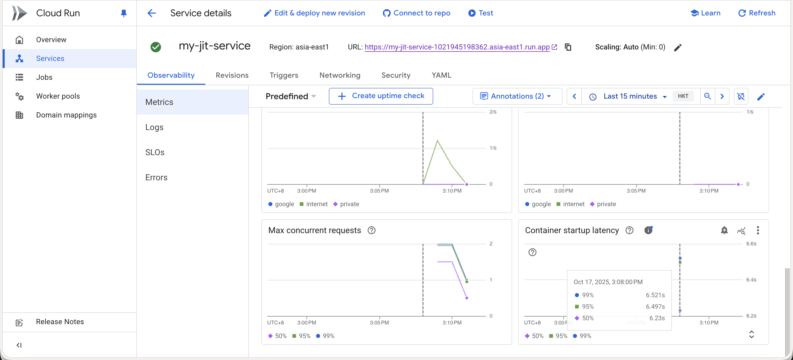
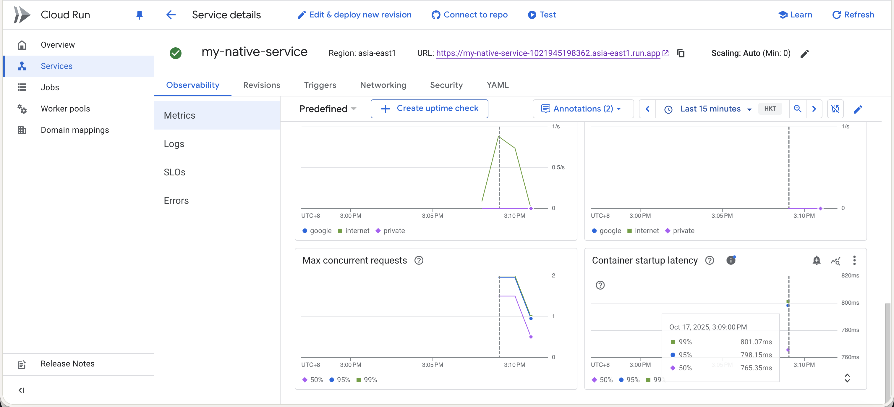

在本實驗中，您將學習：
我們會從 start.spring.io 取得應用程式：
curl https://start.spring.io/starter.zip -d dependencies=web \
-d javaVersion=11 \
-d bootVersion=3.4.0 -o io-native-starter.zip
這個指令會下載一個包含 Spring Web 依賴的專案，使用 Java 11 和 Spring Boot 3.4.0 版本。
unzip io-native-starter.zip
Positive : 專案已成功建立！接下來我們要配置 Spring Native 相關設定。
在 build.gradle 檔案的 plugins 區塊中加入 Spring AOT (Ahead-of-Time) 編譯外掛程式：
plugins {
id 'org.graalvm.buildtools.native' version '0.10.1'
}
作用： 這個外掛程式會預先處理您的 Spring 應用程式，分析程式碼並產生原生映像檔所需的設定檔。
目的： 顯著提升原生映像檔的相容性、啟動速度並減少記憶體佔用。這是建置 Spring Native 應用程式的關鍵步驟。
在 build.gradle 檔案的 repositories 區塊中加入：
repositories {
mavenCentral()
maven { url 'https://repo.spring.io/release' }
}
作用： 告訴 Gradle 一個新的可以下載套件的倉庫地址。
目的： Spring Native 相關的套件是實驗性功能，它們放在 Spring 自己的 release 倉庫裡。不加上這行，Gradle 會因為找不到 AOT 外掛程式而報錯。
在 build.gradle 檔案中加入 bootBuildImage 設定：
bootBuildImage {
builder = 'paketobuildpacks/builder-jammy-base:latest'
environment = ['BP_NATIVE_IMAGE': 'true']
}
作用： 這一段是針對 bootBuildImage 這個 Gradle 任務的專門設定。
目的：
builder = 'paketobuildpacks/builder-jammy-base:latest': 使用 Paketo Buildpacks 的 jammy-base 建置器來建立 Docker 映像檔。這是一個輕量級的基礎映像檔，可以讓最終產生的 Docker 映像檔體積更小，也更安全。environment = ['BP_NATIVE_IMAGE': 'true']: 設定環境變數告訴 Buildpacks 要建置 Spring Native 原生映像檔，而不是傳統的 JVM 應用程式。在 settings.gradle 檔案中加入：
pluginManagement {
repositories {
maven { url 'https://repo.spring.io/release' }
gradlePluginPortal()
}
}
Positive : 所有配置都完成了！這些設定共同協作，確保您的 Gradle 專案能夠找到並使用 Spring Native 工具，在建置時觸發 AOT 處理，並最終產生一個最佳化的原生 Docker 映像檔。
使用以下指令建置 Docker 映像檔：
./gradlew bootBuildImage
這個指令會建置一個包含原生映像檔的 Docker 容器。建置過程可能需要幾分鐘時間。
建置完成後，檢查產生的 Docker 映像檔：
docker images demo
您應該會看到一個名為 demo 的映像檔，標籤為 0.0.1-SNAPSHOT。
Positive : 恭喜！您已經成功建置了 Spring Native 映像檔。
首先，取得您的 Google Cloud 專案 ID：
export PROJECT_ID=$(gcloud config list --format 'value(core.project)')
docker tag demo:0.0.1-SNAPSHOT asia-east1-docker.pkg.dev/$PROJECT_ID/jit-image-docker-repo/jit-image:v1
docker push asia-east1-docker.pkg.dev/$PROJECT_ID/jit-image-docker-repo/jit-image:v1
gcloud run deploy my-jit-service \
--image asia-east1-docker.pkg.dev/$PROJECT_ID/jit-image-docker-repo/jit-image:v1 \
--region asia-east1 \
--memory=1Gi \
--allow-unauthenticated
docker tag demo:0.0.1-SNAPSHOT asia-east1-docker.pkg.dev/$PROJECT_ID/native-image-docker-repo/native-image:v1
docker push asia-east1-docker.pkg.dev/$PROJECT_ID/native-image-docker-repo/native-image:v1
gcloud run deploy my-native-service \
--image asia-east1-docker.pkg.dev/$PROJECT_ID/native-image-docker-repo/native-image:v1 \
--region asia-east1 \
--memory=1Gi \
--allow-unauthenticated
Positive : 兩個版本都已成功部署到 Cloud Run！您可以在 Google Cloud Console 查看服務狀態和取得服務 URL。
部署完成後，您可以比較 JIT 和 Native 版本在以下方面的差異：


從上面兩張圖可以清楚看到，Native 版本的冷啟動時間顯著低於 JIT 版本，這對於 Cloud Run 這類 serverless 平台特別重要。
使用 Cloud Run 提供的 URL 測試兩個服務，觀察它們的回應時間差異。
Negative : 注意：Native 映像檔的建置時間會比 JIT 版本長很多，這是正常現象。權衡建置時間與執行效能是選擇使用 Native 映像檔的考量之一。
恭喜！您已經完成了 Spring Native Workshop。在本實驗中，您學習了：